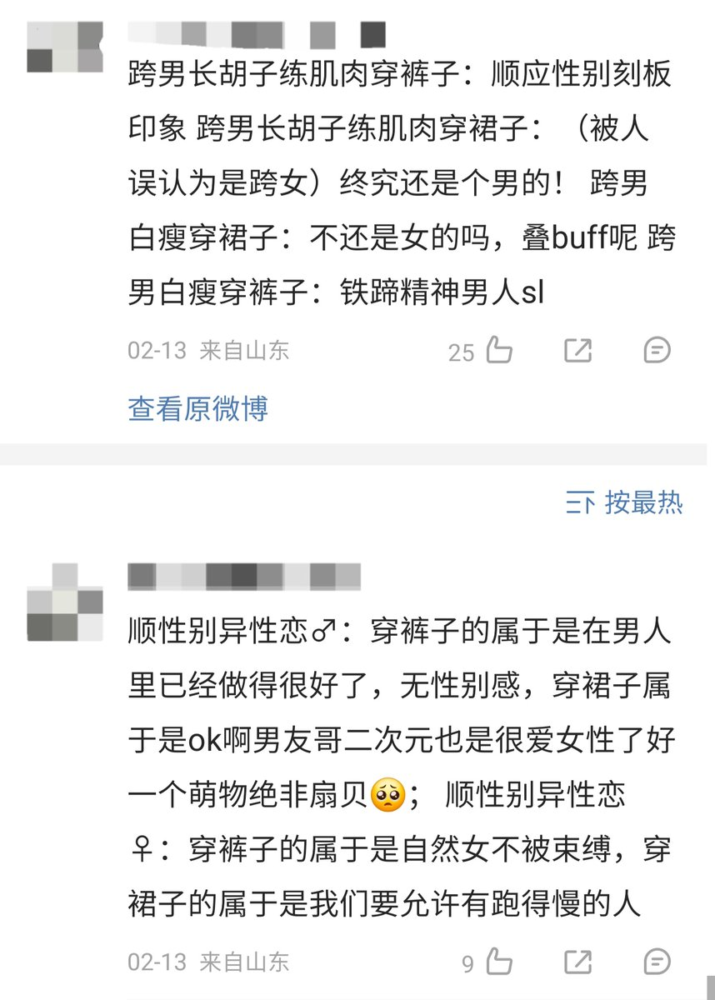

monnun
@h191980276
男性必须得怎么样怎么，女性必须得怎么样怎么样。这事到底是顺性别在搞在宣传在挥舞大棒，还是跨性别在搞？是跨性别在深受其迫害，还是跨性别在迫害顺性别？这我相信大伙心里还是有数的

monnun
@h191980276
是的没错，跨性别又要被要求媚男批评不够女心批评AG批评不化妆不努力融入女性社交批评童年期表现的不够痛苦是假跨，又要服从医疗系统审查迫害加骗钱，又要被这种畜生指责不陪着男娘玩，跨女的网站被男娘管着不让上传有用信息，最后连跨女在医院遭受的苦难都要挪用给男娘，这就是压迫男娘的特权阶级跨女 https://t.co/kki1OxkX5a